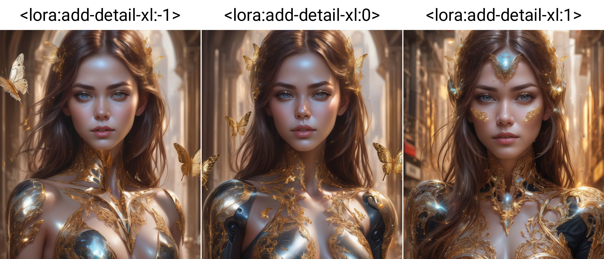
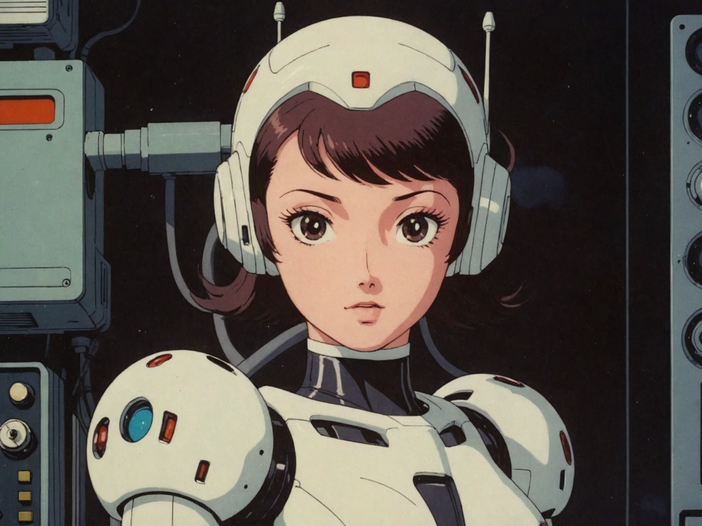
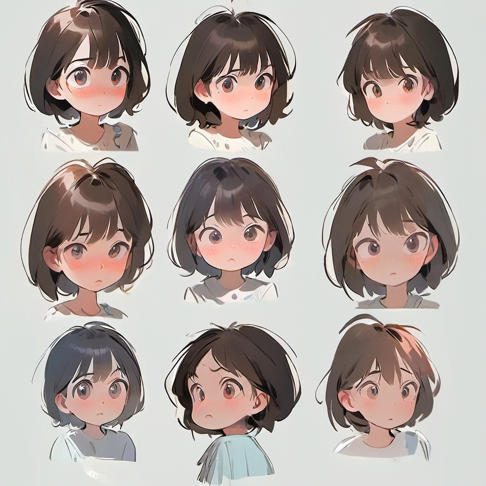
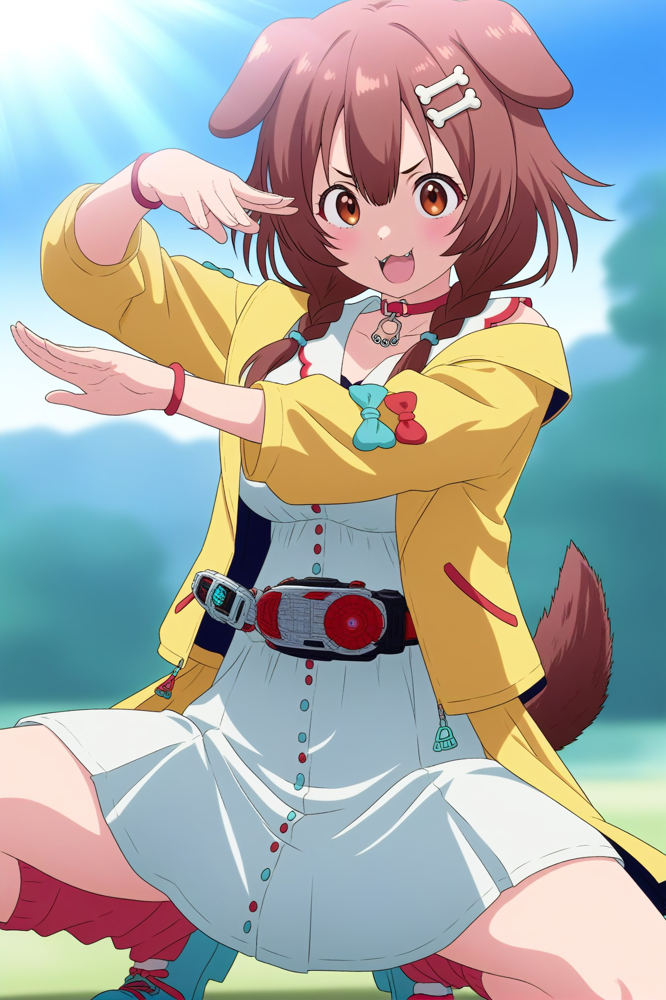

SDXL 対応 おすすめLoRA一覧
対応モデルごとに分類されたLoRA一覧です。各カテゴリーを選択してください。全 985 ファイル。
loras (1)
Flux (168)
Illustrious (196)
Pony (104)
SD1.5 (264)
SDXL (23)
Unknown (124)
WanVideo (106)
SDXL (23 items on this page / Total 23 items)
SDXL
全般
akira_japan
「akira_japan」に特化した追加学習モデルです。Stable DiffusionでのAI画像生成にLoRAを導入し、特定要素の再現性を劇的に向上。効率的かつ高品質なビジュアルを求める全てのAI絵師必見のモデルです。
Size: 228,455,100 bytes
SDXL
全般
Japan-ish
「Japan-ish」に特化した追加学習モデルです。Stable DiffusionでのAI画像生成にLoRAを導入し、特定要素の再現性を劇的に向上。効率的かつ高品質なビジュアルを求める全てのAI絵師必見のモデルです。
Size: 228,486,396 bytes
SDXL
全般
muromachi86
「muromachi86」に特化した追加学習モデルです。Stable DiffusionでのAI画像生成にLoRAを導入し、特定要素の再現性を劇的に向上。効率的かつ高品質なビジュアルを求める全てのAI絵師必見のモデルです。
Size: 228,474,540 bytes
SDXL
全般
aesthetic_anime_v1s
「aesthetic_anime_v1s」に特化した追加学習モデルです。Stable DiffusionでのAI画像生成にLoRAを導入し、特定要素の再現性を劇的に向上。効率的かつ高品質なビジュアルを求める全てのAI絵師必見のモデルです。
Size: 340,768,396 bytes
SDXL
全般
Anime_Rose_Garden_Girls
「Anime_Rose_Garden_Girls」に特化した追加学習モデルです。Stable DiffusionでのAI画像生成にLoRAを導入し、特定要素の再現性を劇的に向上。効率的かつ高品質なビジュアルを求める全てのAI絵師必見のモデルです。
Size: 228,455,828 bytes
SDXL
全般
Anime_Style_Chinese_Cheongsam_Dress
「Anime_Style_Chinese_Cheongsam_Dress」に特化した追加学習モデルです。Stable DiffusionでのAI画像生成にLoRAを導入し、特定要素の再現性を劇的に向上。効率的かつ高品質なビジュアルを求める全てのAI絵師必見のモデルです。
Size: 228,459,412 bytes

SDXL
全般
eye_catching
「eye_catching」に特化した追加学習モデルです。Stable DiffusionでのAI画像生成にLoRAを導入し、特定要素の再現性を劇的に向上。効率的かつ高品質なビジュアルを求める全てのAI絵師必見のモデルです。
Size: 8,789,076 bytes

SDXL
全般
looking_at_viewer
「looking_at_viewer」に特化した追加学習モデルです。Stable DiffusionでのAI画像生成にLoRAを導入し、特定要素の再現性を劇的に向上。効率的かつ高品質なビジュアルを求める全てのAI絵師必見のモデルです。
Size: 8,789,076 bytes
.preview.jpg)
SDXL
全般
Lucasarts Artstyle - (Trigger is lcas artstyle)
「Lucasarts Artstyle - (Trigger is lcas artstyle)」に特化した追加学習モデルです。Stable DiffusionでのAI画像生成にLoRAを導入し、特定要素の再現性を劇的に向上。効率的かつ高品質なビジュアルを求める全てのAI絵師必見のモデルです。
Size: 456,484,932 bytes
SDXL
全般
MJ52
「MJ52」に特化した追加学習モデルです。Stable DiffusionでのAI画像生成にLoRAを導入し、特定要素の再現性を劇的に向上。効率的かつ高品質なビジュアルを求める全てのAI絵師必見のモデルです。
Size: 2,280,805,228 bytes
SDXL
全般
noc-wfhlgr2
「noc-wfhlgr2」に特化した追加学習モデルです。Stable DiffusionでのAI画像生成にLoRAを導入し、特定要素の再現性を劇的に向上。効率的かつ高品質なビジュアルを求める全てのAI絵師必見のモデルです。
Size: 114,434,244 bytes
SDXL
全般
WDR_Scenery_all-inclusive
「WDR_Scenery_all-inclusive」に特化した追加学習モデルです。Stable DiffusionでのAI画像生成にLoRAを導入し、特定要素の再現性を劇的に向上。効率的かつ高品質なビジュアルを求める全てのAI絵師必見のモデルです。
Size: 456,483,860 bytes

SDXL
全般
add-detail-xl
「add-detail-xl」に特化した追加学習モデルです。Stable DiffusionでのAI画像生成にLoRAを導入し、特定要素の再現性を劇的に向上。効率的かつ高品質なビジュアルを求める全てのAI絵師必見のモデルです。
Size: 228,452,344 bytes

SDXL
全般
Dreamyvibes artstyle SDXL - Trigger with dreamyvibes artstyle
「Dreamyvibes artstyle SDXL - Trigger with dreamyvibes artstyle」に特化した追加学習モデルです。Stable DiffusionでのAI画像生成にLoRAを導入し、特定要素の再現性を劇的に向上。効率的かつ高品質なビジュアルを求める全てのAI絵師必見のモデルです。
Size: 456,484,948 bytes
SDXL
全般
IconsRedmondV2-Icons
「IconsRedmondV2-Icons」に特化した追加学習モデルです。Stable DiffusionでのAI画像生成にLoRAを導入し、特定要素の再現性を劇的に向上。効率的かつ高品質なビジュアルを求める全てのAI絵師必見のモデルです。
Size: 170,540,036 bytes
SDXL
全般
kaleidoshatter_xl_v1
「kaleidoshatter_xl_v1」に特化した追加学習モデルです。Stable DiffusionでのAI画像生成にLoRAを導入し、特定要素の再現性を劇的に向上。効率的かつ高品質なビジュアルを求める全てのAI絵師必見のモデルです。
Size: 340,768,396 bytes
SDXL
全般
LineAniRedmondV2-Lineart-LineAniAF
「LineAniRedmondV2-Lineart-LineAniAF」に特化した追加学習モデルです。Stable DiffusionでのAI画像生成にLoRAを導入し、特定要素の再現性を劇的に向上。効率的かつ高品質なビジュアルを求める全てのAI絵師必見のモデルです。
Size: 170,540,028 bytes
SDXL
全般
Love_is_antinoice_XL
「Love_is_antinoice_XL」に特化した追加学習モデルです。Stable DiffusionでのAI画像生成にLoRAを導入し、特定要素の再現性を劇的に向上。効率的かつ高品質なビジュアルを求める全てのAI絵師必見のモデルです。
Size: 228,453,292 bytes

SDXL
全般
osamu_tezuka_xl_v1
「osamu_tezuka_xl_v1」に特化した追加学習モデルです。Stable DiffusionでのAI画像生成にLoRAを導入し、特定要素の再現性を劇的に向上。効率的かつ高品質なビジュアルを求める全てのAI絵師必見のモデルです。
Size: 340,768,396 bytes
SDXL
全般
PixelArtRedmond-Lite64
「PixelArtRedmond-Lite64」に特化した追加学習モデルです。Stable DiffusionでのAI画像生成にLoRAを導入し、特定要素の再現性を劇的に向上。効率的かつ高品質なビジュアルを求める全てのAI絵師必見のモデルです。
Size: 170,540,052 bytes

SDXL
全般
stickersXL
「stickersXL」に特化した追加学習モデルです。Stable DiffusionでのAI画像生成にLoRAを導入し、特定要素の再現性を劇的に向上。効率的かつ高品質なビジュアルを求める全てのAI絵師必見のモデルです。
Size: 340,803,756 bytes
SDXL
全般
国风插画SDXL
「国风插画SDXL」に特化した追加学習モデルです。Stable DiffusionでのAI画像生成にLoRAを導入し、特定要素の再現性を劇的に向上。効率的かつ高品質なビジュアルを求める全てのAI絵師必見のモデルです。
Size: 340,768,396 bytes

SDXL
全般
Illustrious_susamix_LoRA
「Illustrious_susamix_LoRA」に特化した追加学習モデルです。Stable DiffusionでのAI画像生成にLoRAを導入し、特定要素の再現性を劇的に向上。効率的かつ高品質なビジュアルを求める全てのAI絵師必見のモデルです。
Size: 1,392,146,344 bytes